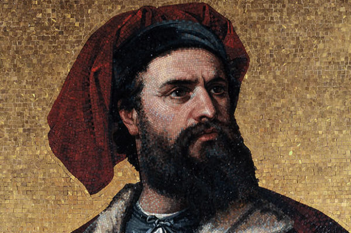
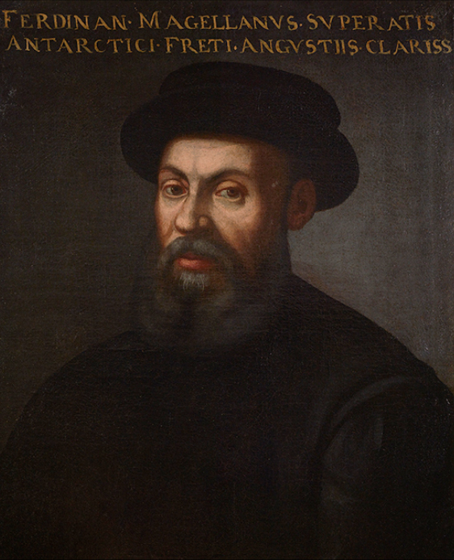

Nama : Marcopolo
Nama : Marcopolo
Lahir : 1254 Venesia, Italia.
Tujuan : Mencari dunia timur yang kaya (China)
Prestasi : penjelajah Eropa pertama yang memberi informasi mengenai
kekayaan di wilayah timur, semua itu tertuang dalam buku berjudul Imagomundi
Tahun penjelajahan : 1487
Kebangsaan :Portugal
Sponsor : Raja John II
Latar Belakang Pelayaran : Ditutupnya Constatinopel oleh Mehmed Al Fatih
Tujuan : Menemukan India (Spice Island)
Prestasi : Menemukan Ujung Afrika, Cape Strom dan membuka harapan bagi
para pelaut Portugal untuk menemukan “The New World, wilayah tersebut saat ini
dikenal sebagai Tanjung Harapan

Nama : Vasco Da Gamma
Kebangsaan : Portugal
Titik terjauh : Calicut, India tahun 1498
Sponsor : Raja Manuel I
Latar Belakang : Ditutupnya Constatinopel dan melanjutkan perjalanan B. Diaz
Tujuan : Menemukan India (Spice Island)
Prestasi : Orang Portugal pertama yang sampai di wilayah yang dianggap sebagai “Spice Island”.

Nama : Alfonso De Alburquerque
Tahun Kelahiran : 1453
Kebangsaan : Portugal
Sponsor : Raja Manuel I (Portugal)
Latar Belakang : Melanjutkan perjalanan Da Gamma untuk menemukan pulau rempah yang sesungguhnya (Nusantara)
Tujuan : Mencari wilayah yang kaya akan rempah-rempah
Prestasi : Berhasil menaklukan Selat Malaka (1511) dan
memerintahkan orang kepercayaannya untuk menemukan Spice Island/ Maluku (1512).

Nama : Cristopher Colombus
Tahun lahir : 1451
Kebangsaan : Italia
Sponsor : Ratu Isabella dan Raja Ferdinand (Spanyol)
Latar Belakang : Menemukan India menggunakan jalur Barat serta membuktikan bahwa Bumi berbentuk bulat
Tujuan : Menemukan India untuk mengambil rempah - rempah, dan menjadikan ia dan negara sponsor menjadi kaya
Pencapaian : Menemukan benua baru yang ia kira India, melainkan sebuah benua yang sekarang bernama Amerika.

Nama : Ferdinand Magelhans